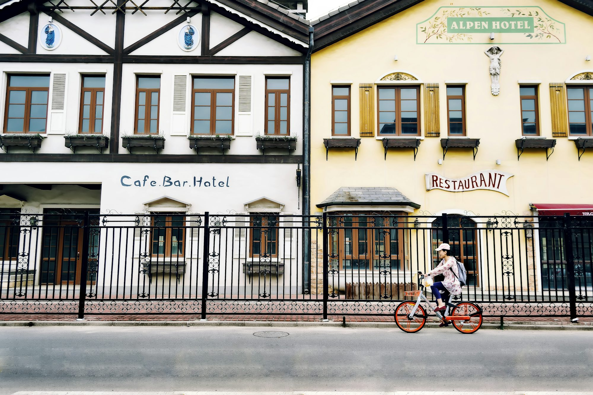

Cycling and Mindfulness: Finding Peace on Two Wheels
This article explores the intersection of cycling and mindfulness, discussing how riding can enhance mental well-being, promote self-awareness, and foster a deeper connection to the environment.The Concept of Mindfulness
Mindfulness is the practice of being present in the moment, fully aware of one’s thoughts, feelings, and surroundings. It involves observing experiences without judgment and cultivating a sense of appreciation for the here and now. Many people associate mindfulness with meditation, but it can be integrated into everyday activities, including cycling.
How Cycling Encourages Mindfulness
When cycling, individuals engage in a rhythmic activity that can help clear the mind and focus attention. The repetition of pedaling, combined with the sensory experiences of the environment, allows cyclists to enter a state of flow—an immersive mental state where one loses track of time and becomes deeply engrossed in the activity. This sense of flow is akin to mindfulness, as it fosters awareness and presence in the moment.
As cyclists navigate different terrains, they are often required to concentrate on their surroundings—whether it’s a winding road, a bustling city, or a serene nature path. This concentration draws attention away from everyday stressors and invites a sense of peace, allowing riders to appreciate the beauty of their journey.
Benefits of Mindful Cycling
The practice of mindful cycling offers a range of benefits, enhancing both mental and emotional well-being. Here are some key advantages of integrating mindfulness into cycling:
Stress Reduction
Cycling provides a natural outlet for stress relief. The combination of physical activity and fresh air can help release pent-up tension, allowing cyclists to unwind and recharge. When individuals focus on their breath and the rhythm of their pedaling, they can let go of worries and embrace a state of calm. This stress reduction is especially valuable in today’s fast-paced world, where many people experience overwhelming pressure from work and personal responsibilities.
Enhanced Self-Awareness
Mindful cycling encourages greater self-awareness, allowing individuals to tune into their bodies and emotions. Riders often become more attuned to how their bodies feel as they pedal, noting changes in energy levels, muscle tension, and overall physical sensations. This heightened awareness can lead to better understanding one’s limits and capabilities, fostering a healthier relationship with physical activity.
Additionally, cycling offers a unique opportunity for introspection. As cyclists ride through varying landscapes, they may find themselves reflecting on personal goals, relationships, or life choices. This introspective practice can lead to valuable insights and a deeper understanding of oneself.
Connection to Nature
One of the most rewarding aspects of cycling is the opportunity to connect with nature. Riding through parks, forests, or scenic routes allows individuals to immerse themselves in the beauty of the natural world. This connection to nature has been shown to have numerous psychological benefits, including improved mood and reduced feelings of anxiety.
While cycling, individuals can observe the changing seasons, listen to the sounds of birds, and breathe in the fresh air. These sensory experiences enhance mindfulness, helping cyclists cultivate appreciation for the environment and foster a sense of gratitude for the present moment.
Practical Tips for Mindful Cycling
Incorporating mindfulness into cycling doesn’t require any special skills—just a willingness to be present. Here are some practical tips to help cyclists embrace mindfulness on their rides:
1. Focus on Your Breath: Begin your ride by taking a few deep breaths to center yourself. Throughout the ride, maintain awareness of your breath, noticing how it syncs with your pedaling rhythm.
2. Limit Distractions: Try to minimize distractions by leaving your phone behind or setting it to silent. This allows you to fully immerse yourself in the experience of cycling without interruptions.
3. Observe Your Surroundings: Pay attention to the sights, sounds, and smells around you. Notice the colors of the landscape, the feel of the wind on your skin, and the sounds of nature. This practice of observation enhances awareness and appreciation for the moment.
4. Ride at a Comfortable Pace: Choose a pace that allows you to feel relaxed and enjoy the ride. Riding too fast can create stress and detract from the mindfulness experience. Focus on enjoying the journey rather than rushing to reach a destination.
5. Practice Gratitude: Take moments during your ride to express gratitude for your surroundings, your body, and the opportunity to cycle. This practice can enhance feelings of contentment and joy.
Mindful Cycling and Community
Cycling can also be a communal experience that enhances mindfulness through shared connections. Joining group rides or cycling clubs offers opportunities to connect with fellow riders who share similar interests and values. These social interactions can create a supportive environment for mindfulness practice.
Group Rides as a Mindful Experience
Participating in group rides can be an enriching way to engage in mindful cycling. When riding with others, individuals can practice mindfulness together, sharing moments of silence, conversation, and camaraderie. The collective experience of cycling fosters a sense of belonging and connection, enhancing the overall enjoyment of the ride.
Moreover, group rides often promote a spirit of encouragement and support, helping individuals feel motivated and inspired. This sense of community can make the cycling experience even more fulfilling, as riders share tips, routes, and personal stories.
Embracing Mindfulness Beyond Cycling
While cycling provides a unique platform for mindfulness, the principles of mindfulness can be integrated into other aspects of life as well. Engaging in daily activities with intention and presence can enhance overall well-being and promote a healthier mindset.
Everyday Mindfulness Practices
Incorporating mindfulness into daily routines can be as simple as paying attention to one’s breath while walking, savoring meals without distractions, or practicing gratitude before bedtime. These small adjustments can lead to significant improvements in mental clarity and emotional resilience.
Practicing mindfulness beyond cycling can help individuals manage stress, improve focus, and cultivate a greater appreciation for life’s moments. By making a conscious effort to be present, individuals can experience a deeper sense of fulfillment and joy in everyday activities.
Conclusion
Cycling offers an incredible opportunity to embrace mindfulness, promoting mental well-being and enhancing the cycling experience. The combination of physical activity, nature, and introspection fosters a sense of peace and connection to the world. By practicing mindfulness while riding, cyclists can reap the benefits of stress reduction, self-awareness, and a deeper appreciation for their surroundings. Whether cycling solo or with a group, the joy of mindful cycling is an enriching journey that encourages individuals to live in the moment and discover the beauty of life on two wheels.